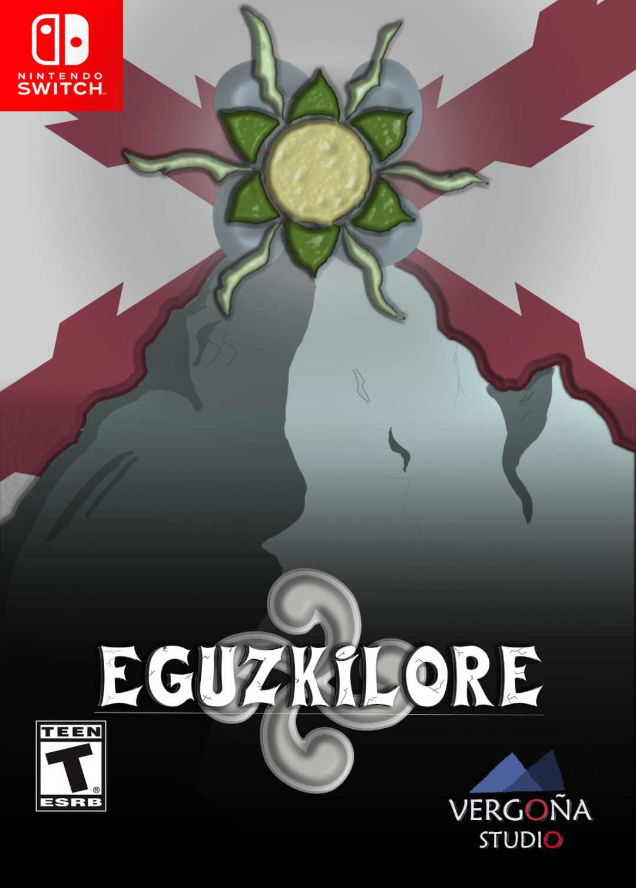
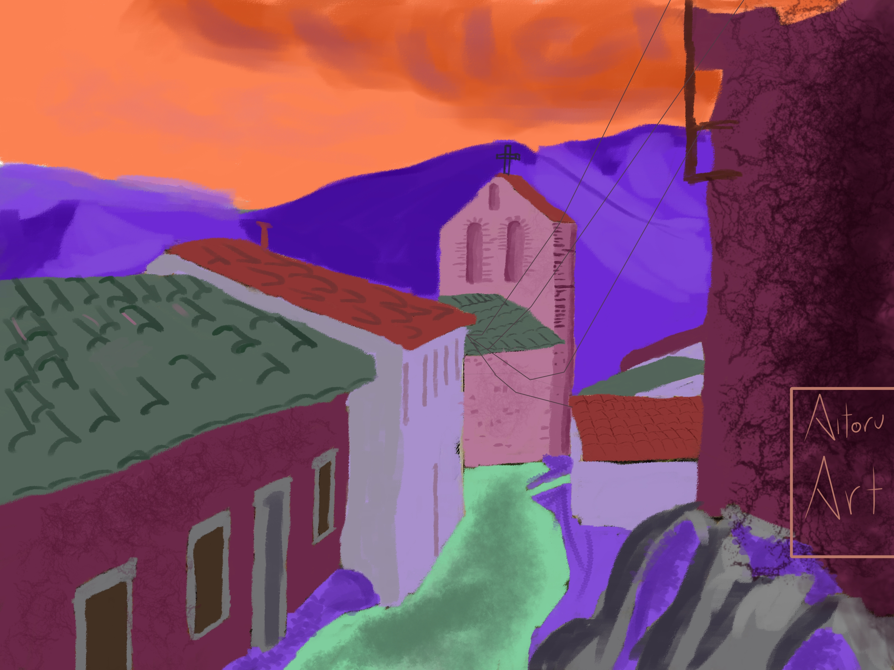
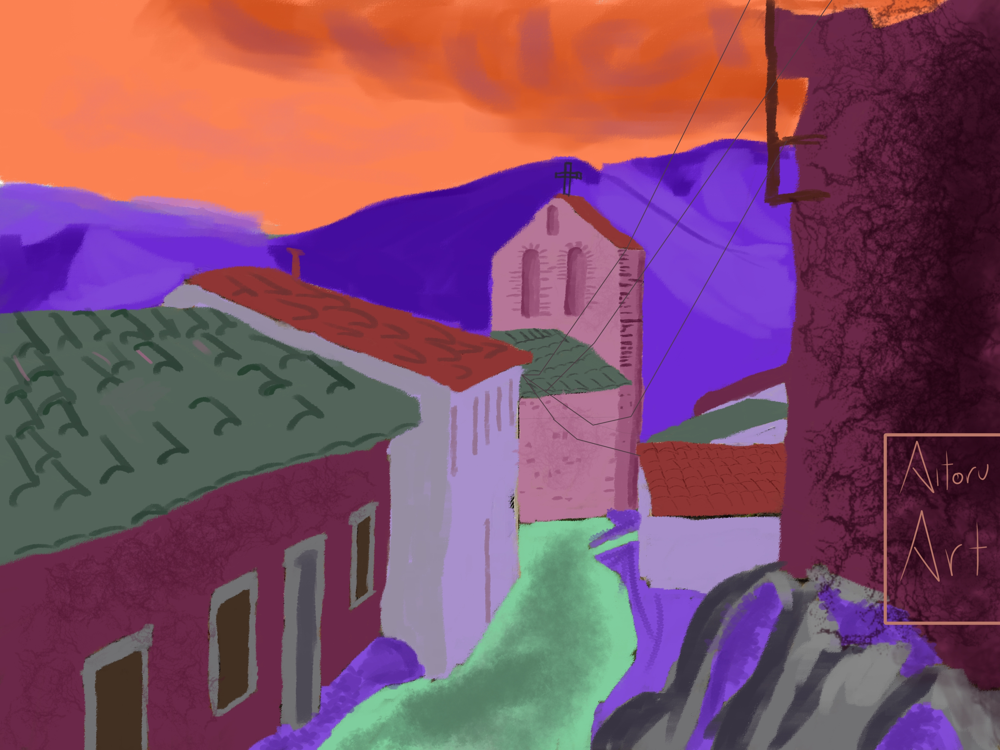
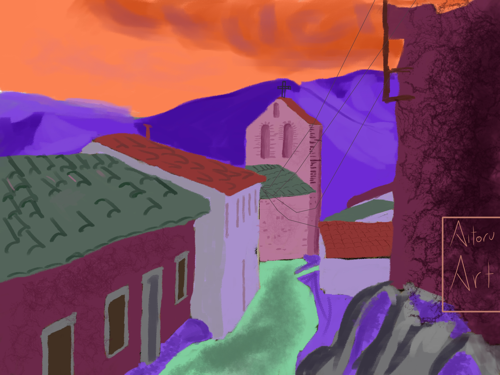

Metroidvania con toques de investigacion y simulación social ambientado en la mitologia vasca

Caratula del juego
Fichas de personajes

Galeria del juego
Un misterio acecha al pueblo de Thistle, en Inglaterra. Acompaña a Eve Ladrian mientras se ve envuelta en un conflicto en el que se enfrentan fuerzas que ella no puede comprender. Explora la antigua civilización Jende en este metroidvania de acción frenética y resolución de puzzles, mientras descubres quién está detrás de unas extrañas desapariciones en el pueblo. Como si se tratara de una clásica novela visual establece relaciones con los vecinos del pueblo e interrógales. Averigua qué está pasando y recuerda, "El Sol te protegerá"
ATENCIÓN: Esta página simula una campaña de crowdfunding de un
videojuego y no representa un producto real.
Práctica de Multimedia, 1º GDDV - Curso 19/20 (Quintana), URJC.
La URJC no se hace responsable del contenido expuesto por el autor.
El género es una mezcla entre metroidvania, tomando un mapa conectado con caminos y atajos y novela visual de investigación, de este coge el desarrollo de personajes mediante interacciones además de la búsqueda de pistas para resolver misterios
Sinopsis
En el año 20XX en un pueblo inglés llamado Thistle existe una pequeña civilización en decadencia llamada Jende, esta decadencia se debe a la perdida de poder de la deidad Mari debido a una secta que se esta asentando en Thistle y que está arrebatando toda la fe dirigida hacia ella, entre tanto Eve una universitaria que se ha mudado con su tía a Thistle conseguirá tener contacto con Mari que la nombrará su heraldo y la mandará extender su influencia otorgándole su bendición, mientras, en Thistle , se encontrará con extraños casos de muertes y desapariciones que la policía ignora o evita.
Jugabilidad
Eve contará con la Bendición de Mari con la que podrá revivir dando a cambio su esencia solar, Mientras se encuentre en Jende poseerá un kit de armas cuerpo a cuerpo y habilidades que aumentarán conforme avance el juego, por otro lado, en Thistle deberá investigar las muertas y desapariciones explorando el pueblo en busca de pistas para desenmarañar el misterio que amenaza a este, en esta fase podrá establecer relaciones con los vecinos del pueblo ayudándoles a recuperar fe en Mari lo que también afectará positivamente cuando vuelva a Jende.
Mecánica del juego
Volviendo a la división del gameplay. En Jende, Eve tiene que recuperar la influencia de La Madre Mari de las garras de la extraña secta que asola el sistema cavernoso en el que viven sus habitantes. El mapa está dividido en áreas, y en cada una de ellas, existe un caudillo sectario que mantiene el control sobre esa zona, la mayoría de las veces estarán ocultos en ruinas cuyo acceso estará restringido hasta que se desbloquee la entrada gracias a las investigaciones en Thistle. En el pueblo, Eve tendrá que investigar unas extrañas muertes y desapariciones que sospecha que están relacionados con la secta que amenaza el pueblo. Podrá también entablar amistades con los vecinos del pueblo mediante la toma de decisiones, lo cual desbloqueará escenas en las que se conocerá más en profundidad a dichos personajes (aunque las necesarias para el arco de cada personaje serán obligatorias).
La cámara será fija por un lado en Jende, seguirá un scroll lateral desde un ángulo frontal, se oscurecerá conforme menos vida tengas, en Thistle se establecerá un ángulo cenital que se moverá según lo haga el personaje en las 8 direcciones, cambiando a primera persona frontal al investigar algo.
Se guardará partida rezando en los altares de Mari donde también se desbloqueará el mapa.
Categoría
‘Eguzkilore’ toma inspiración de juegos como: ‘Hollow Knight’, ‘Super Metroid’, ‘Castlevania Rondo of Blood’, etc. Aprovecha su filosofía de diseño de mapas para crear un mundo interconectado y a la vez coherente y su sistema de progresión y ‘backtracking’ para darle un ritmo adecuado al juego. Sin embargo, se diferencia de ellos en el sistema de combate, más basado en combos precisos entre 3 tipos de ataque (fuerte, medio y flojo) y las interacciones que estos tienen para hacer la mayor cantidad de daño en cada rotación. Además de la capacidad de crear una ‘build’ de personaje acorde al estilo de cada jugador gracias a un sistema de niveles. Por otro lado, la sección de investigación coge influencias de sagas como ‘Ace Attorney’, ‘999’, ‘Ghost Trick’, ‘Hotel Dusk’… La principal diferencia con estos juegos es el cambio en la perspectiva, que pasa de ser una cámara frontal estática, a una perspectiva cenital en tercera persona, haciendo uso de las cámaras frontales para escenas concretas de investigación, además del mayor énfasis que se pone en trabar amistades con los distintos vecinos de Thistle con el aliciente de mejoras en la parte de acción y exploración, como ataques espaciales u otras bonificaciones. Mecánica: Como ya se ha dicho, ‘Eguzkilore’ se divide en dos grandes secciones de gameplay: La de acción y aventuras y la de investigación. En ambas controlaremos a Eve, pero sus capacidades varían en función de si se encuentra en el pueblo Jende o en Thistle. En el primero, dispondrá de las acciones básicas (correr, atacar, saltar, interactuar…) e irá desbloqueando habilidades tanto en el ámbito de combate como en el del movimiento (nuevas técnicas de combate, doble salto, magia…), además podrá curarse con unos matraces recargables. Si se diera el caso en el 7que la barra de vida baje a 0, Eve volverá a la vida a perdiendo en el proceso toda la esencia solar (utilizada para mejorar habilidades, armas…). En Thistle, Eve podrá andar y contará con tres acciones contextuales, hablar, interactuar y presentar; con la que se podrá enseñar algún objeto de interés a la gente del pueblo para que le digan sus opiniones al respecto.
Mundo del juego
“Antaño existía una antigua civilización que se asentaba en las faldas de las montañas ya que era el lugar de descanso de su diosa madre, Mari. La Madre, tenía la capacidad de viajar entre todas las montañas, no importa cuán lejos estuvieran entre sí, le debía esta capacidad (y otras muchas) a la fe que profesaba su pueblo hacia ella. Sus creyentes, en agradecimiento colgaban de sus puertas una eguzkia, una curiosa flor que solo crecía en los lugares bendecidos por la fertilidad de Mari y que tomaron como su símbolo. Sin embargo, seres de fuera de la Tierra se asentaron amenazando la paz en la que vivía la extraña civilización. Para combatir contra esta extraña invasión Mari ocultó a todos los pueblos en cuevas, y selló un pacto con los invasores mediante el cual tenían prohibido atacar a la gente que mostrara el símbolo de la eguzkia ya que contenía parte de su poder destructivo, pero hubo algunos de los devotos seguidores de Mari que se atrevieron a salir. Esos son los antepasados de la gente de Thistle. O al menos, eso se ha ido contando de generación en generación en mi familia, probablemente no sea más que un cuento para asustar a los niños…” Esta fue la historia que le contaron a Eve al llegar a Thistle y que explica el supuesto origen del pueblo, probablemente los residentes del pueblo crean que solo es una leyenda, sin embargo, Eve descubrirá que esa historia tiene más de real que de cuento.
Marcos Toledo Sanchez
Aitor Lebrero Barroso
Isabel Escudero Orden
Jesús Culebras González
¿En que consola va a salir?
En switch y pc ¿Cuánto costará?
15€ de salida. ¿Habrá DLC?
De momento no nos hemos planteado la posibilidad pero si hay interés por parte de los fans sí. ¿Fecha de salida?
Estará disponible para finales de 2022. ¿Saldrá en formato físico o solo digital?
Solo digital, hasta que no haya progreso en las ventas no podemos arriesgarnos a lanzar copias en físico. ¿Habrá más entregas?
Se determinará en función de las ganancias que obtengamos con esta entrega.


 
